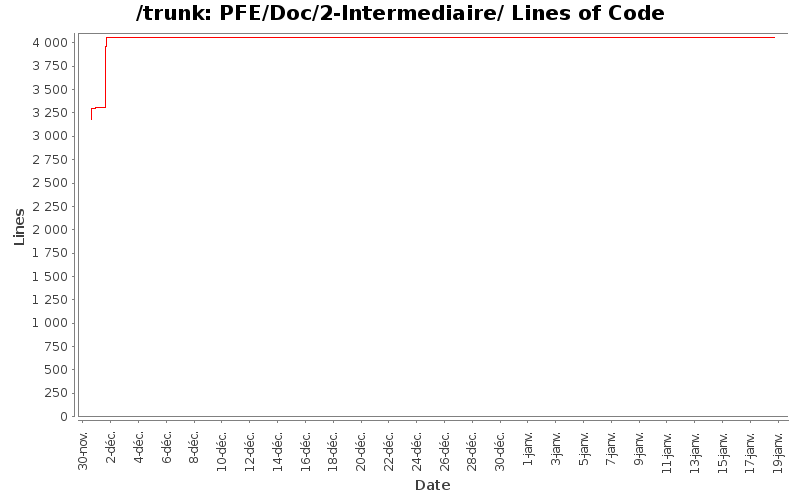

[root]/PFE/Doc/2-Intermediaire

| Author | Changes | Lines of Code | Lines per Change |
|---|---|---|---|
| Totals | 32 (100.0%) | 5554 (100.0%) | 173.5 |
| nakara.rahma | 11 (34.4%) | 2861 (51.5%) | 260.0 |
| fab0670312047 | 13 (40.6%) | 1655 (29.8%) | 127.3 |
| Abdelali.nait | 1 (3.1%) | 540 (9.7%) | 540.0 |
| hoc5783 | 7 (21.9%) | 498 (9.0%) | 71.1 |
+ Modif du titre de nos rapports.
+ Squelette du rapport final.
1 lines of code changed in 1 file:
+ relecture
993 lines of code changed in 3 files:
+ Relecture et ajout de la conclusion dans le rapport
318 lines of code changed in 3 files:
+ Ajout de la deuxième itération du gestionPojet.lyx
540 lines of code changed in 1 file:
+ correction Introduction.lyx
124 lines of code changed in 1 file:
+ Voilà la conclusion à relire et à valider ^^
51 lines of code changed in 1 file:
+ Correction Intro
+ Première partie de la conclusion que je vais le finir dans l'heur qui suive
128 lines of code changed in 2 files:
+ Ajout début gestion de projet
84 lines of code changed in 1 file:
+ Ajout gestion de projet
459 lines of code changed in 2 files:
++ correction générale
2737 lines of code changed in 10 files:
+ Ajout Intro
+ Relecture et mise en forme
119 lines of code changed in 7 files: